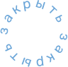

О компании
Руководство
История компании
Операционная структура
Услуги
Сейсморазведочные работы
Супервайзинг сейсморазведочных работ
Камеральные работы
Экологическое проектирование
Пресс-центр
Карьера
Вакансии
Устойчивое развитие
Охрана окружающей среды
Охрана труда и промышленная безопасность
Противодействие коррупции
Контакты
8 (391) 200-12-85
office@seismopoisk.ru
8 (391) 200-12-85
office@seismopoisk.ru
404
Сраница не найдена
Вернуться назад